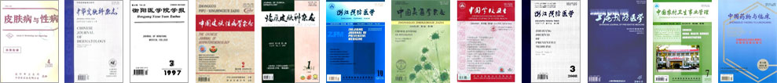

华山专家门诊学科研究论文

-
《安体舒通治疗寻常痤疮疗效观察》
《皮肤病与性病》，1990年04期，李长恒
-
《血管淋巴组织增生伴嗜酸性细胞增多症附65例分析》
《皮肤病与性病》，1991年 第2期，李长恒
-
《环孢菌素A引起多毛的致病机理初探》
《皮肤病与性病》，1993年第3期，李长恒
-
《2%酮康唑洗剂治疗头皮糠疹和脂溢性皮炎》
《中华皮肤科杂志》，1996年02期，王家俊
-
《126例沙眼衣原体感染男性非淋菌性尿道炎的临床分析》
《衡阳医学院学报》，1997年第25卷第3期，闵自强
-
《国内首见球毛过壳菌所致暗色丝也霉病》
中华皮肤科杂志》，1998年 第5期，王家俊
-
《100株临床分离致病酵母体外药敏试验分析》
《中华皮肤科杂志》，2000年5月第33期，王家俊
-
《裴氏着色真菌所致皮肤着色芽生菌病1例》
中国皮肤性病学杂志》，2002年 第2期，王家俊
-
《PCR―RFLP鉴别临床常见的皮肤癣菌》
《中国皮肤性病学杂志》，2002年第3期 ，王家俊
-
《总状毛霉所致原发性皮肤毛霉病一例》
《中华皮肤科杂志》，2002年第5期，王家俊
-
《上海地区600例头癣病原菌分析》
《中华皮肤科杂志》，2002年第5期，王家俊
-
《湖州市流行性出血热季节分布特征》
《浙江预防医学》，2008年20卷第03期，闵自强
-
《马拉色菌相关疾病的现状与研究进展》
《中国真菌学杂志》，2008年第4期，王家俊
-
《浙江2所高校大学生艾滋病/性病行为干预效果评估》
《中国学校卫生》，2009年30卷第04期，闵自强
-
《浙江大学生艾滋病性病健康教育效果评价》
《中国学校卫生》，2009年30卷第06期，闵自强
-
《湖州某院严重急性呼吸道感染流行病学及危险分析》
《上海预防医学》，2012年第04期，闵自强
-
《2005-2010年湖州其他感染性腹泻病例流行特征分析》
《中国农村卫生事业管理》，2012年第07期，闵自强
-
《螺内酯治疗痤疮的研究进展》
《中国药物与临床》，2013年 第9期，李长恒